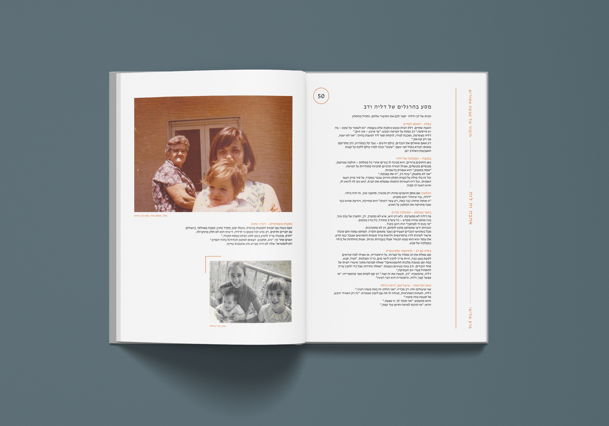
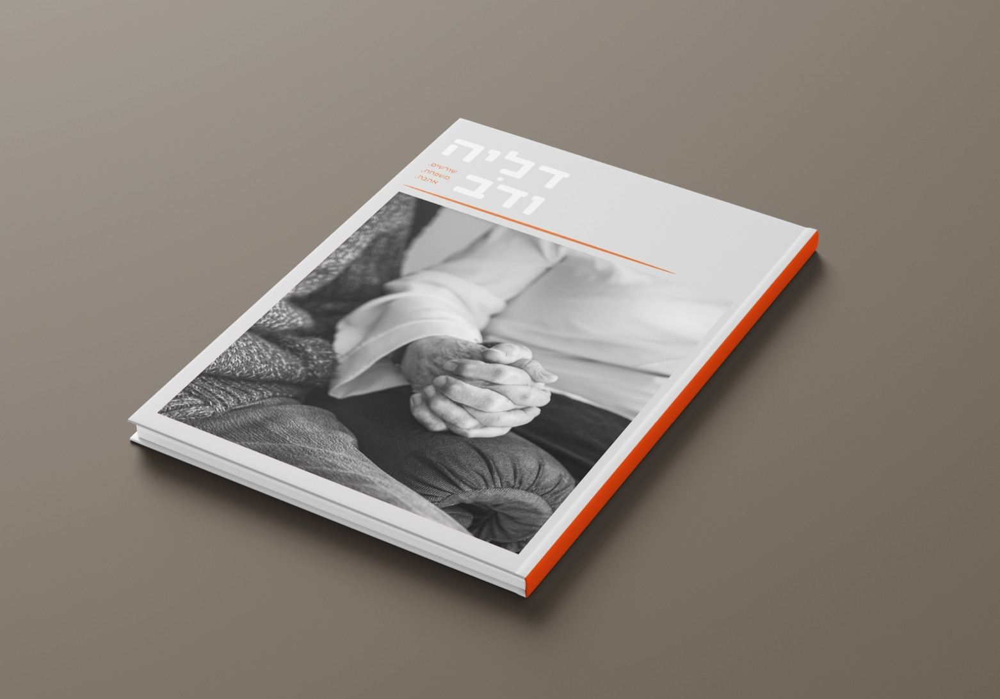
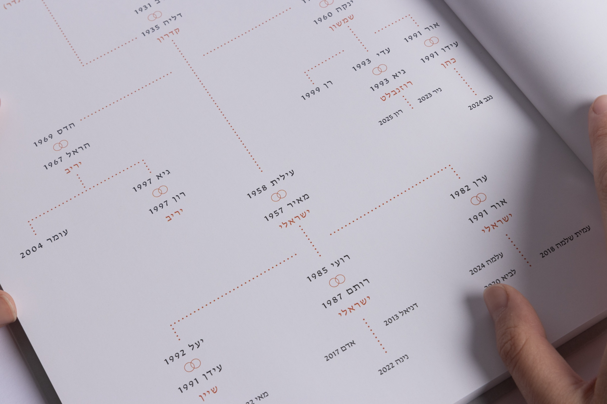
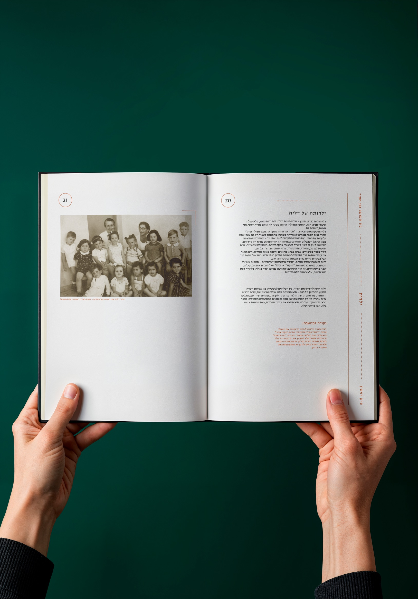
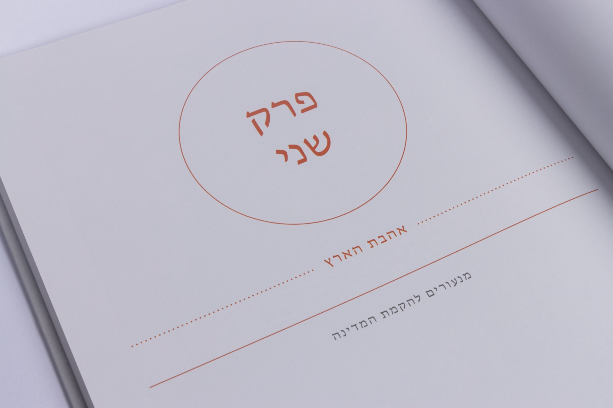
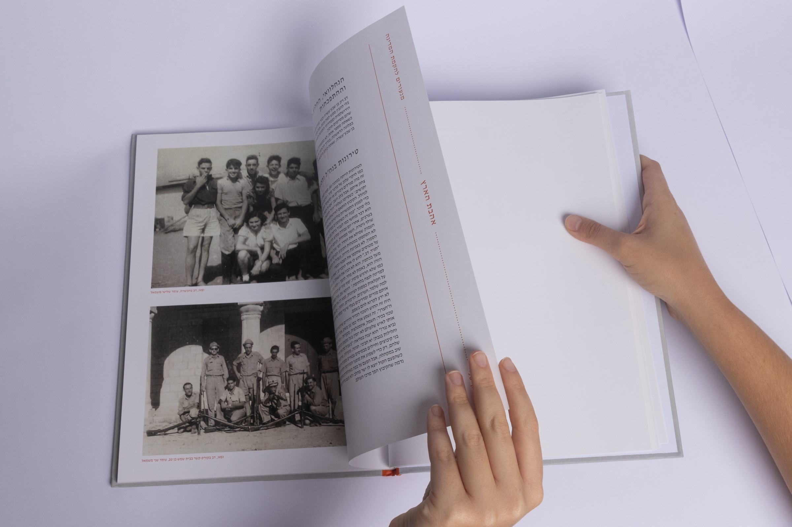
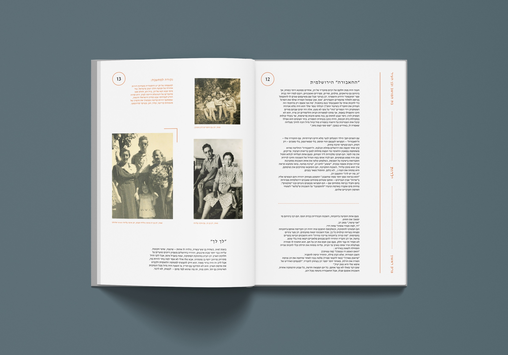
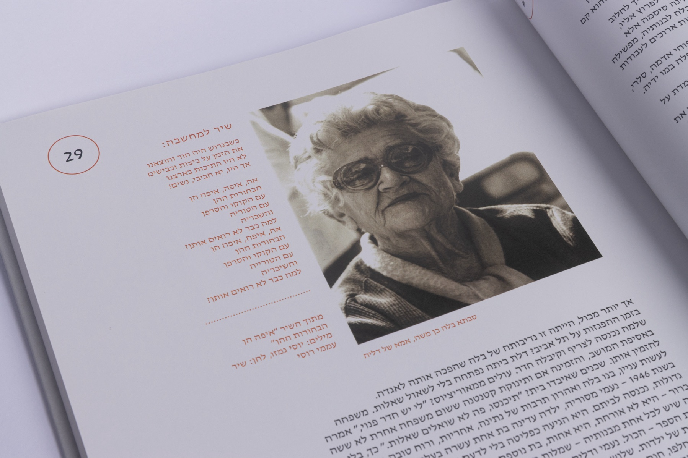

DALIA AND DOV
A FAMILY CHRONICLE
Description
Editorial Design, Book Design
2026
Independent Commission
“Dalia & Dov” is an independently published book commissioned by three sisters to tell their parents’ love story, intertwined with pioneering life and the founding of Moshav Yarkona. Written by an author in collaboration with the family, the book combines a biographical narrative with a family photo album. I was responsible for the book’s design and the restoration of its historical photographs.



The main challenge was designing a novel in an A4 format that could also accommodate a family photo album. Running chapter headings guide readers through the seven chapters while visually narrowing the text area to proportions closer to those of a traditional novel. I chose Michal Sahar’s Masada typeface for its balance of nostalgic and contemporary qualities, and orange as a reference to the orchard at the family home, a central setting in their lives and their daughters’ childhoods.



